Manuale del Quaderno HACCP
Ogni capitolo ha la foto dello schermo. I numeri rosa nella foto sono gli stessi dei passi sotto.
Le foto usano nomi e dati finti.
📌Prima di cominciare
- 📶
Serve internet. Guarda la scritta in alto. Verde SALVATAGGIO ATTIVO vuol dire: tutto a posto. Se è arancione, aspetta a salvare e controlla il Wi-Fi.
- 👀
Controlla sempre prima di salvare. L'app può leggere fatture ed etichette da sola. Ma può sbagliare. Guarda lotto e scadenza.
- ✍️
Usa sempre lo stesso nome per un ingrediente. Per esempio scrivi sempre farina 00. Così l'app collega i lotti giusti.
- 🔒
Ognuno entra con la sua email. Non dare la tua password ad altri.
- 💬
Un dubbio o un errore? Dillo a Rosa. Va bene anche una foto dello schermo. Ogni consiglio serve a migliorare l'app.
🗓️La giornata tipo
Ecco cosa fare e quando. Il resto lo fa l'app.
Registra le temperature di frighi e congelatori. Come si fa
🚚 Arriva merceCarica o fotografa la fattura. Come si fa
📦 Apri una confezione senza fatturaFotografa l'etichetta. Come si fa
🥐 Hai finito un prodottoTocca Ho prodotto. Come si fa
🗑️ Finisce una confezioneIn Lotti tocca Finito. Come si fa
🌙 SeraRegistra di nuovo le temperature e le pulizie.
Hai dimenticato qualcosa? La schermata Oggi te lo ricorda con un avviso.
🔑1. Entrare nell'app
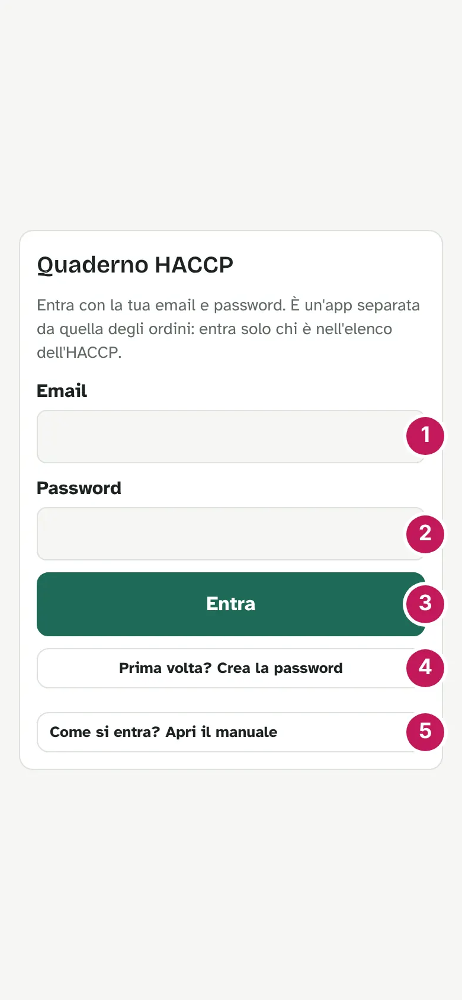
- 1Scrivi la tua email.
- 2Scrivi la tua password.
- 3Tocca Entra.
- 4È la prima volta? Leggi il riquadro qui sotto.
- 5Questo pulsante apre il manuale.
La prima volta
- 1Chiedi a Rosa di aggiungere la tua email.
- 2Scrivi la tua email.
- 3Inventa una password. Almeno 6 caratteri.
- 4Tocca Prima volta? Crea la password.
- 5Se ti arriva un'email, apri il link dentro l'email.
- 6Torna nell'app. Tocca Entra.
Vedi la scritta "Questa email non è ancora abilitata"? Rosa non ti ha ancora aggiunto. Chiedi a lei.
📲2. Mettere l'app sul telefono
Così la apri con un tocco, come le altre app. Si fa una volta sola.
🍎 iPhone
- 1Apri l'indirizzo dell'app con Safari.
- 2Tocca il tasto Condividi: il quadrato con la freccia in su ⬆.
- 3Scorri in giù. Tocca Aggiungi alla schermata Home.
- 4Tocca Aggiungi.
🤖 Android
- 1Apri l'indirizzo dell'app con Chrome.
- 2Tocca i tre puntini in alto a destra ⋮.
- 3Tocca Aggiungi a schermata Home oppure Installa app.
- 4Tocca Installa o Aggiungi.
Ora trovi l'icona verde HACCP sul telefono.
🏠3. La schermata Oggi
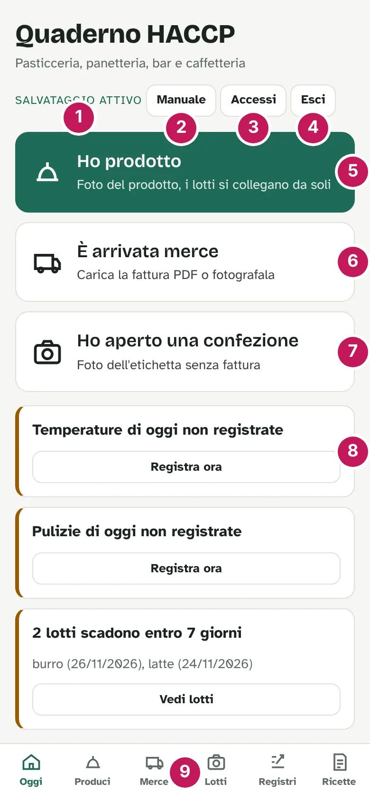
- 1Scritta verde: l'app è collegata. Arancione: controlla internet.
- 2Manuale apre questa guida.
- 3Accessi lo vede solo il titolare. Capitolo 4
- 4Esci chiude il tuo accesso.
- 5Ho prodotto: hai finito un prodotto. Capitolo 8
- 6È arrivata merce: carichi la fattura. Capitolo 5
- 7Ho aperto una confezione: foto dell'etichetta. Capitolo 6
- 8Avvisi: le cose da fare. Tocca il pulsante dentro l'avviso.
- 9Barra in basso: le 6 schermate. Oggi, Produci, Merce, Lotti, Registri, Ricette.
👥4. Accessi: aggiungere il personale
Tocca Accessi in alto.
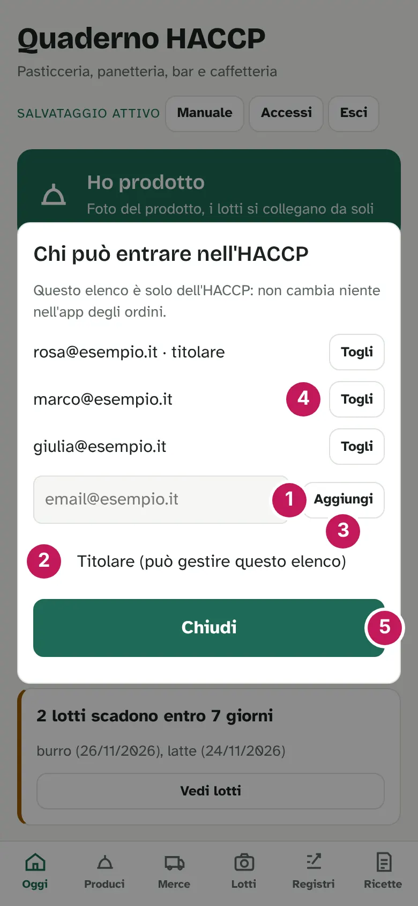
- 1Scrivi l'email della persona.
- 2Titolare: spunta solo se anche questa persona deve gestire l'elenco. Di solito no.
- 3Tocca Aggiungi.
- 4Togli: quella persona non entra più.
- 5Tocca Chiudi.
Poi di' alla persona: apri l'app e segui "La prima volta".
🚚5. È arrivata merce: la fattura
Tocca Merce nella barra in basso.
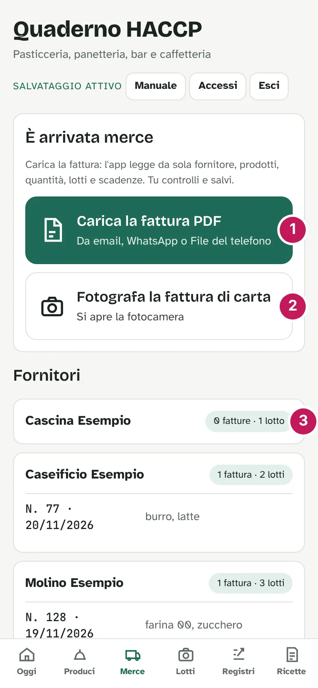
- 1Fattura PDF (arrivata per email o WhatsApp)? Tocca Carica la fattura PDF. Scegli il file.
- 2Fattura di carta? Tocca Fotografa la fattura di carta. Fai la foto.
- 3Fornitori: l'elenco si crea da solo.
Per una buona foto: foglio dritto, tanta luce, tutta la pagina dentro.
Aspetta qualche secondo
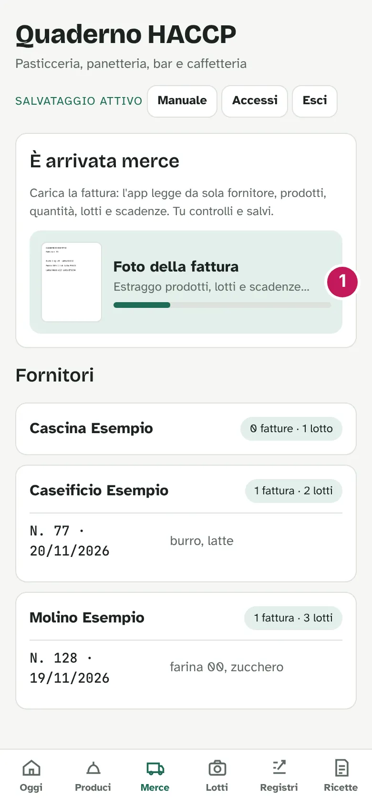
- 1La barra si muove: l'app sta leggendo. Non chiudere l'app.
Controlla i dati in alto
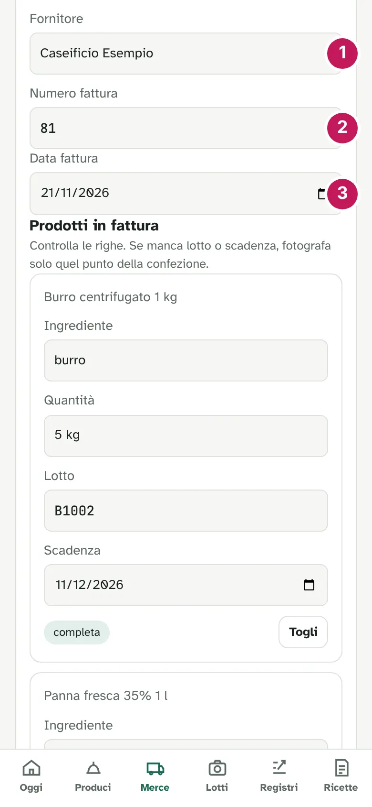
- 1Controlla il fornitore.
- 2Controlla il numero della fattura.
- 3Controlla la data.
Vedi "Questa fattura risulta già caricata"? È un doppione. Tocca Annulla.
Controlla ogni prodotto
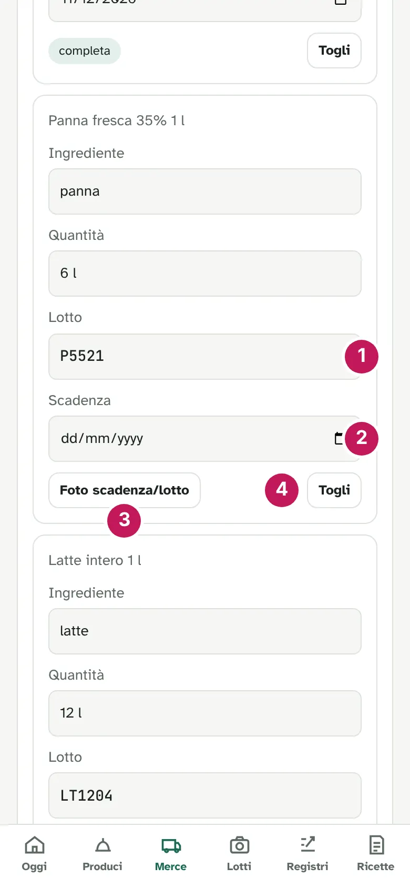
- 1Controlla il lotto.
- 2Controlla la scadenza.
- 3Manca il lotto o la scadenza? Tocca Foto scadenza/lotto. Fotografa quel punto della confezione.
- 4Togli: per le righe che non sono cibo. Per esempio il trasporto.
- 5Aggiungi riga: se manca un prodotto.
- 6Alla fine tocca Salva fattura e lotti.
Vedi "Lettura automatica non disponibile"? Niente paura. Scrivi tu le righe, guardando la fattura.
📷6. Ho aperto una confezione: i lotti
Tocca Lotti nella barra in basso.
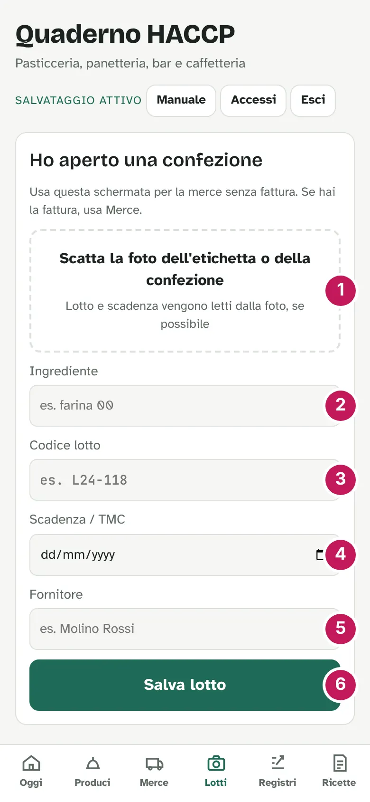
- 1Tocca qui. Fotografa l'etichetta della confezione.
- 2Scrivi l'ingrediente. Usa lo stesso nome delle ricette.
- 3Scrivi il codice lotto. Sulla confezione c'è scritto "Lotto" o "L".
- 4Scrivi la scadenza.
- 5Scrivi il fornitore.
- 6Tocca Salva lotto.
A volte l'app legge da sola lotto e scadenza dalla foto. Controlla sempre.
Lotti in uso
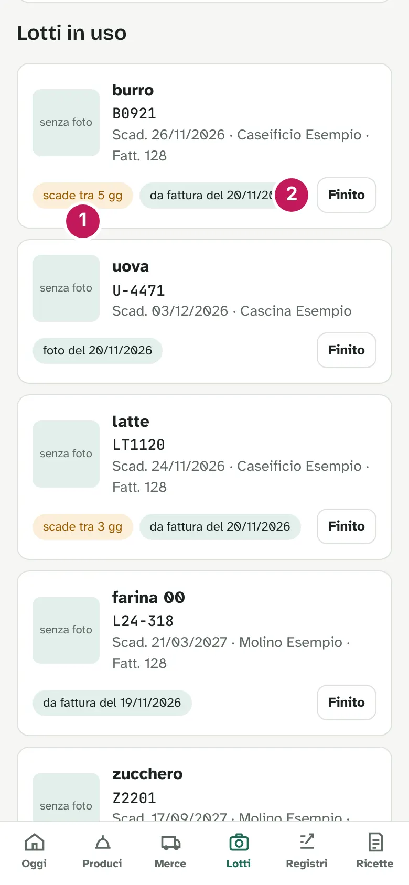
- 1Arancione "scade tra 5 gg": usalo prima. Rosso "scaduto": non usarlo.
- 2Confezione finita? Tocca Finito.
Tocca sempre Finito. Se no l'app collega ancora quel lotto ai prodotti nuovi.
📒7. Le ricette
Tocca Ricette nella barra in basso.
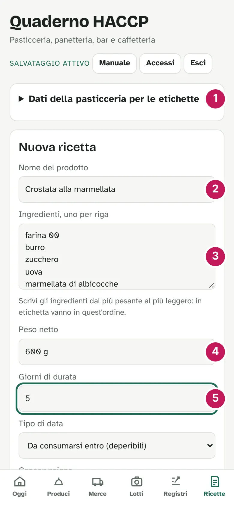
- 1Dati della pasticceria: logo, nome e indirizzo per le etichette. Li mette Rosa, una volta sola.
- 2Scrivi il nome del prodotto.
- 3Scrivi gli ingredienti. Uno per riga. Dal più pesante al più leggero.
- 4Scrivi il peso netto.
- 5Scrivi quanti giorni dura.
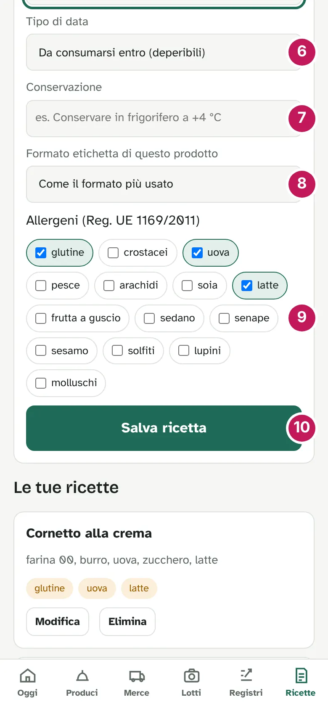
- 6Scegli il tipo di data. Dolci freschi: "Da consumarsi entro".
- 7Scrivi come si conserva. Per esempio: in frigorifero a +4 °C.
- 8Scegli la misura dell'etichetta.
- 9Controlla gli allergeni. L'app ne spunta alcuni da sola. Guardali tutti e 14.
- 10Tocca Salva ricetta.
Sotto trovi Le tue ricette. Lì puoi toccare Modifica o Elimina.
Gli allergeni finiscono sull'etichetta. Un errore qui è un pericolo per il cliente. Controlla due volte.
🥐8. Ho prodotto
Tocca Produci nella barra in basso. Oppure Ho prodotto in Oggi.
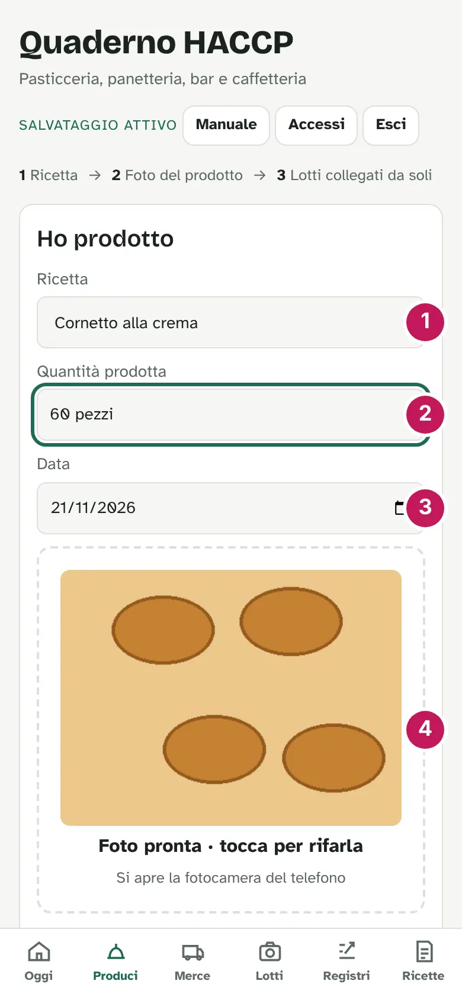
- 1Scegli la ricetta.
- 2Scrivi quanti ne hai fatti.
- 3La data di oggi è già scritta.
- 4Tocca qui. Fotografa il prodotto finito.
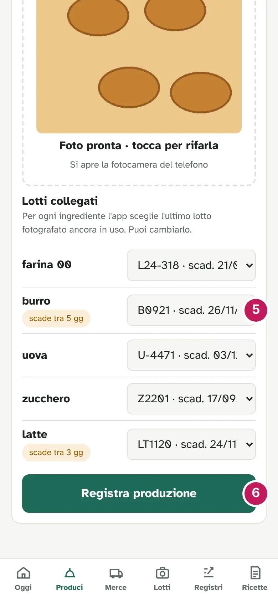
- 5Lotti collegati: l'app sceglie da sola. Controlla. Puoi cambiarlo toccando il lotto.
- 6Tocca Registra produzione.
L'app dà al prodotto un codice lotto. Per esempio COR-261121-1. Va sull'etichetta.
🏷️9. Le etichette
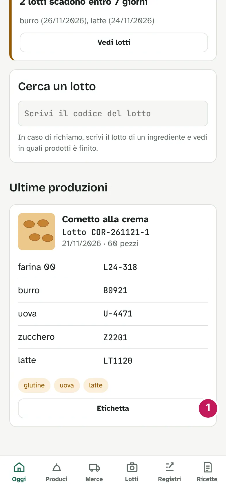
- 1In Oggi, scorri fino a Ultime produzioni. Tocca Etichetta.
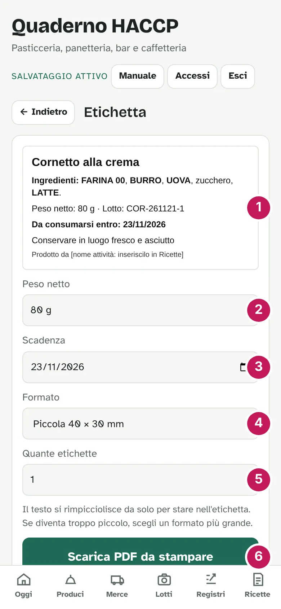
- 1Guarda l'anteprima. Gli allergeni sono in grassetto.
- 2Controlla il peso.
- 3Controlla la scadenza. L'app la calcola da sola.
- 4Scegli la misura.
- 5Scrivi quante etichette ti servono.
- 6Tocca Scarica PDF da stampare. Poi stampa.
Il testo è troppo piccolo? Scegli una misura più grande.
🌡️10. I registri per l'ASL
Tocca Registri nella barra in basso.
Temperature: 2 volte al giorno
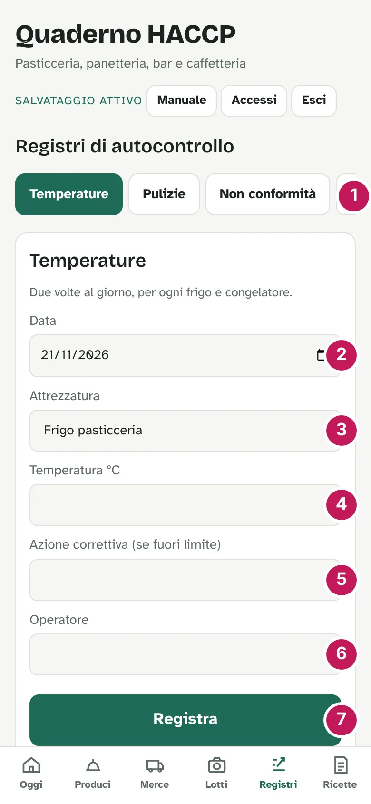
- 1Scegli il registro. Qui: Temperature.
- 2La data di oggi è già scritta.
- 3Scegli il frigo.
- 4Scrivi la temperatura che leggi sul frigo.
- 5Azione correttiva: solo se la temperatura è sbagliata.
- 6Scrivi il tuo nome.
- 7Tocca Registra. Poi passa al frigo dopo.
Se la temperatura è sbagliata
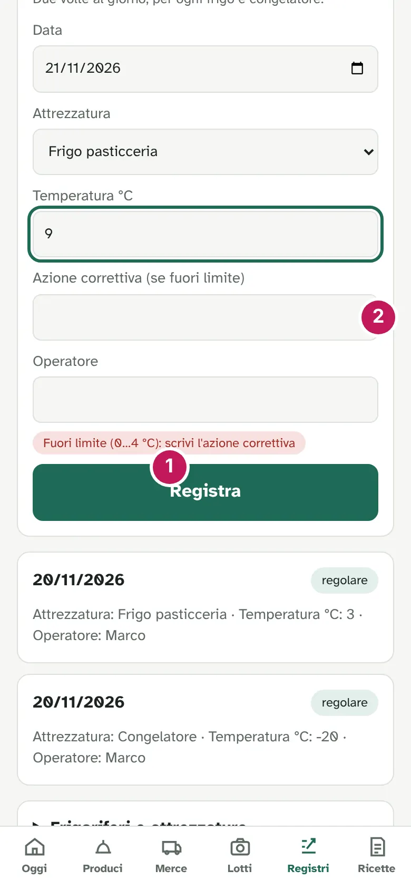
- 1Compare la scritta rossa Fuori limite.
- 2Scrivi cosa hai fatto. Per esempio: "spostata la merce nell'altro frigo, chiamato il tecnico". Senza questo, l'app non salva.
Temperatura sbagliata? Avvisa subito Rosa.
Pulizie: ogni sera
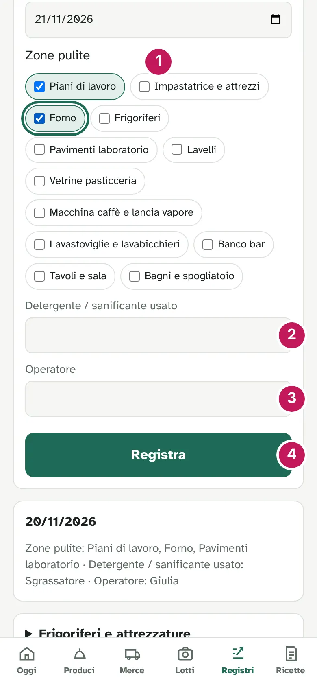
- 1Tocca le zone che hai pulito.
- 2Scrivi il detergente usato.
- 3Scrivi il tuo nome.
- 4Tocca Registra.
Gli altri registri
Funzionano allo stesso modo. Scegli il registro in alto, compila, tocca Registra. Se hai un foglio, fotografalo.
- ❗
Non conformità: un problema. Merce rovinata, prodotto scaduto, reclamo di un cliente, richiamo.
- 🎓
Formazione: l'attestato HACCP di ogni persona, con la scadenza.
- 🐭
Disinfestazione: la visita della ditta.
- 🏛️
Ispezioni ASL: i controlli ricevuti e il verbale.
Al controllo ASL
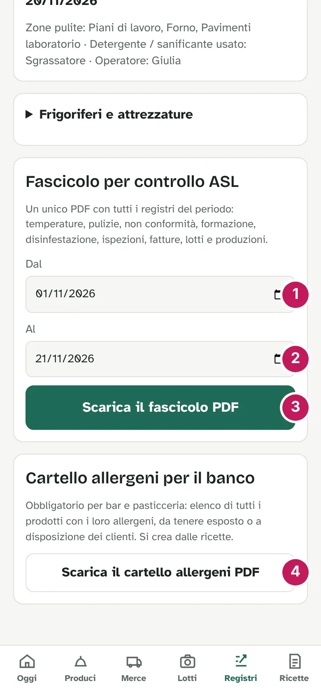
- 1Scegli da che giorno.
- 2Scegli fino a che giorno.
- 3Tocca Scarica il fascicolo PDF. Dentro c'è tutto.
- 4Scarica il cartello allergeni PDF: da stampare e tenere al banco. Rifallo quando cambi una ricetta.
🔎11. Richiamo: cercare un lotto
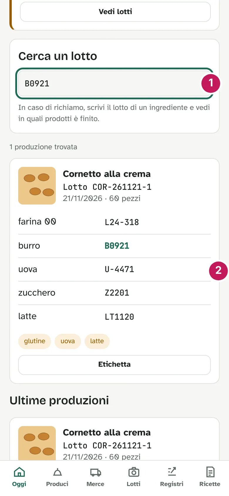
- 1In Oggi, scrivi il codice del lotto in "Cerca un lotto".
- 2Compaiono i prodotti fatti con quel lotto. Il lotto è in verde.
Poi
- 1Togli dalla vendita quei prodotti.
- 2Avvisa subito Rosa.
- 3Vai in Registri → Non conformità. Scegli Richiamo prodotto. Scrivi cosa hai fatto.
🛟12. Se qualcosa non va
- 🟠
La scritta in alto è arancione. Manca internet. Controlla il Wi-Fi. Poi chiudi e riapri l'app.
- 🔑
Hai dimenticato la password. Chiedi a Rosa.
- 🚫
"Questa email non è ancora abilitata". Rosa deve aggiungerti da Accessi.
- 🧾
La fattura non si legge. Rifai la foto più dritta e con più luce. Oppure scrivi tu le righe.
- 🧩
Un ingrediente resta senza lotto. Forse il nome è diverso. "farina" e "farina 00" per l'app sono due cose diverse. Usa sempre lo stesso nome.
- 📄
Non trovi il PDF. Guarda nell'app File (iPhone) o in Download (Android).
- 🔄
Le novità. Arrivano da sole. Chiudi e riapri l'app.
- 💬
Altro? Fai una foto dello schermo e mandala a Rosa.
📖Parole difficili, spiegate
- Lotto
- Il codice che dice da quale produzione arriva una confezione. Sulla confezione c'è scritto "Lotto" o "L".
- Scadenza
- "Da consumarsi entro": dopo quella data non si usa.
- TMC
- "Da consumarsi preferibilmente entro": dopo quella data il prodotto può essere meno buono.
- Tracciabilità
- Sapere quali ingredienti, e quali lotti, ci sono in ogni prodotto.
- Allergeni
- 14 sostanze che possono far male ad alcune persone. Per esempio glutine, latte, uova, frutta a guscio.
- Non conformità
- Qualcosa che non va bene. Per esempio merce rovinata o un frigo troppo caldo.
- Azione correttiva
- Quello che fai per sistemare il problema.
- Richiamo
- Un prodotto da togliere dalla vendita perché può essere pericoloso.